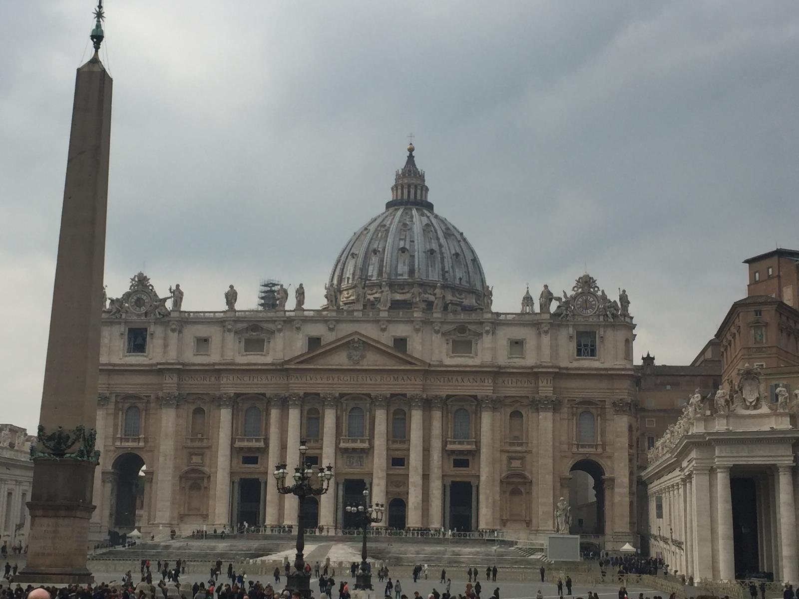
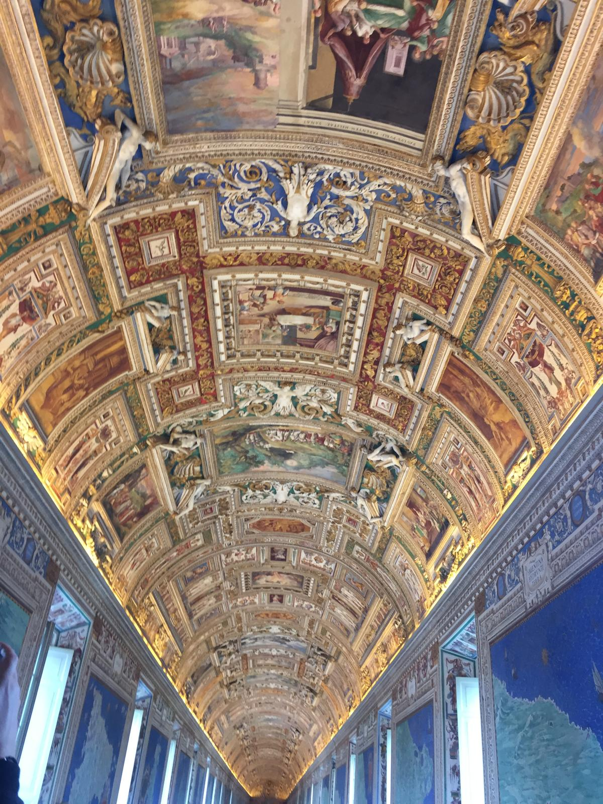
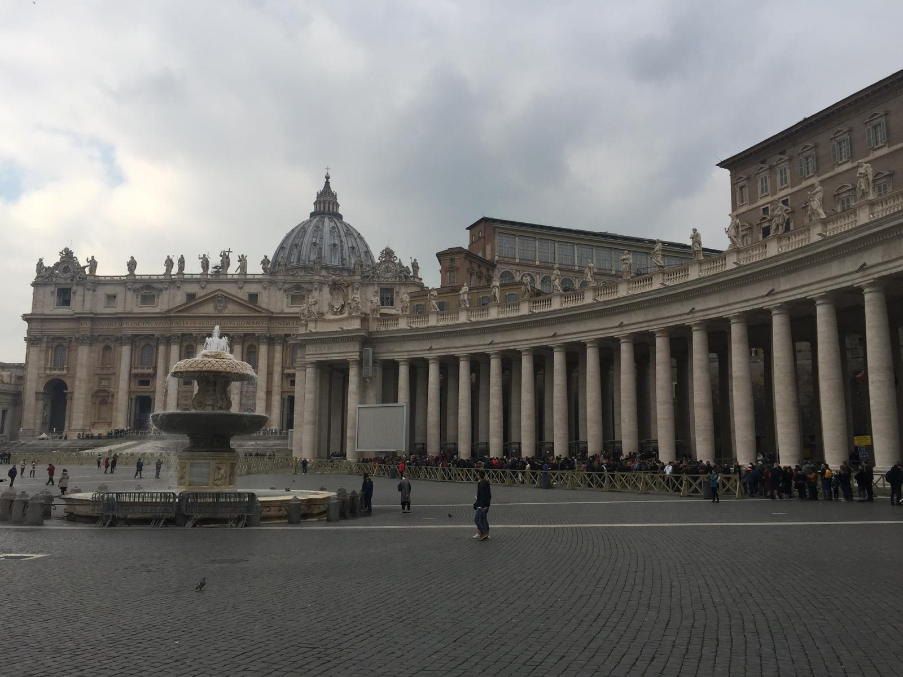
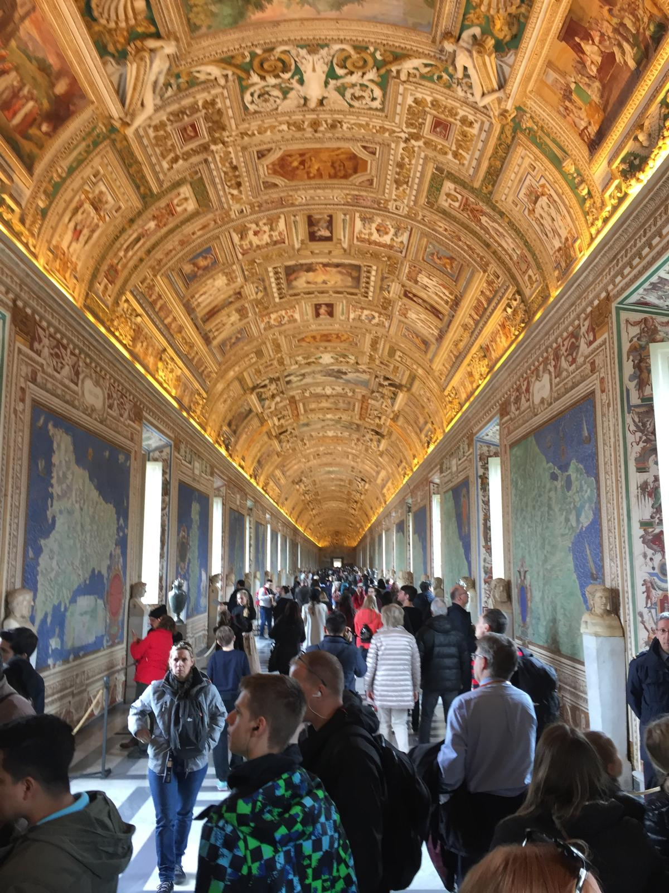

We've visited Vatican City multiple times — and it never gets old. The sheer scale of St Peter's Basilica, the breathtaking Sistine Chapel ceiling, the Vatican Museums overflowing with centuries of treasures, and St Peter's Square bathed in golden light. One of our most unforgettable visits was attending Pope John Paul II's final Easter Mass — a moment of history that will stay with us forever. No trip to Rome is complete without a visit to Vatican City. You could spend hours here and still feel like you've only scratched the surface.
What Vatican City gave us:
A place unlike any other on earth
Vatican City is the world's smallest independent state — just 44 hectares enclosed within Rome — but what it contains is almost impossible to comprehend. The accumulated art, history, architecture and spiritual significance of centuries of the Catholic Church, all in one extraordinary place.
We've been lucky enough to visit multiple times and every visit brings something new. The first time you walk into St Peter's Basilica and your eyes adjust to the scale of it — the soaring dome, the marble, the gold — it genuinely takes your breath away. It is simply one of the most awe-inspiring buildings ever constructed.
The Vatican Museums are a world unto themselves — room after room of sculpture, tapestries, maps, paintings and artefacts gathered from across the globe and across the centuries. And then you turn a corner and you're standing in the Sistine Chapel, looking up at Michelangelo's ceiling — and all words fail you. Nothing quite prepares you for it.
But our most extraordinary visit was in 2005, when we were present for Pope John Paul II's final Easter Mass. The square was packed, the atmosphere electric and deeply moving, and the sense of witnessing history was palpable. It is a memory that has never left us. If you ever have the chance to attend a papal event at the Vatican, take it — it is something genuinely unforgettable.
One of the most magnificent buildings ever constructed. The scale, the art, the dome — it defies expectation every single time. Entry is free and it is an absolute must.
Michelangelo's ceiling is one of the greatest artistic achievements in human history. Standing beneath it in person is an experience that no photograph can prepare you for.
Centuries of treasures gathered from across the world — sculpture, tapestries, maps, paintings, archaeological finds. You could spend a full day here and only begin to see it all.
Bernini's colonnade-flanked piazza is one of the great public spaces in the world — whether packed with pilgrims or quiet in the early morning, it is always stunning.
Papal audiences take place on Wednesday mornings when the Pope is in residence. Being present at a Mass or audience in this setting is a deeply moving and unforgettable experience.
One of the most beautiful rooms in the entire Vatican — a long corridor lined with stunning 16th century topographical maps of Italy. Often overlooked but absolutely worth stopping for.
From the iconic dome and the stunning colonnaded square to the breathtaking Gallery of Maps and the timeless grandeur of St Peter's — Vatican City through our lens.




Want to experience Vatican City and Rome with expert guides, skip-the-line access and everything taken care of? TourRadar has brilliant tours covering the very best of Italy.
Vatican City rewards time and knowledge — having a guide who can bring the history and art to life transforms the experience completely. A guided tour means you won't miss the details, won't waste time queueing, and won't leave wondering what you walked past. Italy as a whole is one of the world's great travel destinations and a guided tour is a brilliant way to make the most of it.
Disclosure: This is an affiliate link. If you book through it we may earn a small commission at no extra cost to you.
From skip-the-line Vatican Museums tickets and Sistine Chapel tours to St Peter's guided visits and private Rome day trips — browse Vatican activities here:
Disclosure: If you book through these links we may earn a small commission at no extra cost to you.
Common questions
What to pack for Vatican City
Rome in summer is hot and sunny — comfortable walking shoes are essential as you will cover significant ground. Note that St Peter's Basilica has a dress code: shoulders and knees must be covered for entry. A light scarf or layer is useful to carry for this reason.
Handy for maps and navigation around Rome — especially useful for getting between Vatican City and other sights without roaming charges.
View on Amazon →Italy uses Type F plugs — a universal travel adaptor is a must. Don't arrive in Rome after a long flight with nothing to charge your devices.
View on Amazon →The Vatican is endlessly photogenic — from the Sistine Chapel to St Peter's dome. Keep a power bank charged so your phone never dies mid-visit.
View on Amazon →Carry water, a light layer, your camera and tickets without weighing yourself down on a full day exploring the Vatican and the surrounding streets of Rome.
View on Amazon →Rome in summer is hot. Stay hydrated on long days walking between the Vatican, St Peter's Square and the rest of the city — Rome has public drinking fountains throughout.
View on Amazon →Always worth having — for blisters from cobblestone walking and anything else that comes up on a busy full day in one of the world's most visited sites.
View on Amazon →The Roman summer sun is strong — you will spend significant time outdoors in St Peter's Square and around the Vatican. A high SPF is essential.
View on Amazon →Essential for long days in the open squares and outdoor areas of the Vatican in summer — keeps you cool and comfortable while queuing and exploring.
View on Amazon →Lightweight, breathable and — importantly — they satisfy the Vatican's dress code for entry to St Peter's. Practical and stylish for a summer Rome trip.
View on Amazon →Rome in summer evenings can have mosquitoes — especially near the Tiber. Worth packing for comfortable outdoor dining and evening walks around the city.
View on Amazon →Disclosure: These are Amazon affiliate links. If you buy through them we may earn a small commission at no extra cost to you. These are all things we'd genuinely pack for a summer trip to Rome and Vatican City.
Book your tickets in advance, wear comfortable shoes, bring a light scarf for the dress code, and give yourself a full day. Vatican City will reward every minute of it — it is one of the truly unmissable experiences on earth.
Affiliate disclosure: if you book through our links we may earn a small commission at no cost to you. We only recommend trips and experiences we'd be happy to stand over.